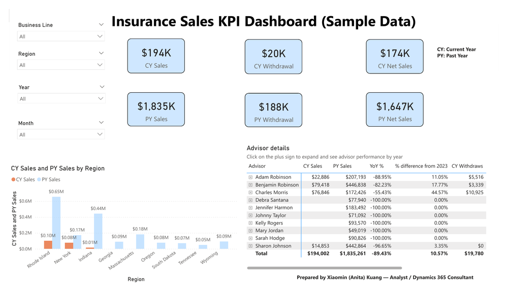
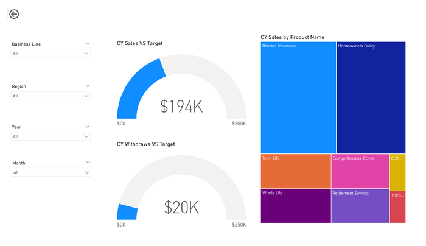
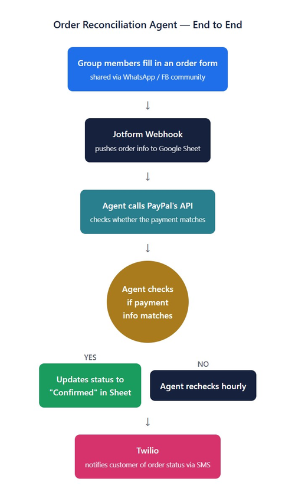

Analyst / Dynamics 365 / Power Platform Consultant
A Power Automate cloud flow triggered on Opportunity create/modify that automatically provisions the correct SharePoint document location — nested under the related Project folder where one exists — with conditional logic to check for an existing folder before creating a duplicate.
If length(outputs('List_existing_Opportunity_Document_Location')) is equal to 0
→ Add a new Document Location for Opportunity, set Parent Location to the new folder
Else
→ Set Parent Location to the existing Document Location
Alongside this, I've worked hands-on with D365's native Word Template functionality — downloading the data schema and mapping fields via Word's XML developer tools to generate documents directly from CRM data.
Reporting from Dynamics 365 relied on a manual process — extract data, upload to SharePoint, refresh Power BI. I built a Power Platform proof-of-concept that automates the whole chain:
Power Automate couldn't consume the existing D365 personal view directly, so I rebuilt the logic as a FetchXML query joining Accounts and System Users, selecting only the required fields.
An end-to-end sales performance dashboard built for a fictional insurance business. Due to data confidentiality, I used representative mock data rather than real client data, modelling a realistic advisor sales reporting scenario without exposing any sensitive information.


A nurture journey with attribute-based branching (filtering out non-homeowners by job title), timed email sequencing, and a hand-off to a Power Automate cloud flow when a lead engages — automatically creating a Dataverse Lead record and assigning a follow-up task to the right sales rep. Designed generically enough to extend to auto-qualifying a lead the moment a client clicks a link, rather than waiting on manual review.
Enhancement requests came in by email, with the system admin going back and forth for missing details before manually creating and populating a DevOps work item — slow and error-prone. I replaced it with a Microsoft Form capturing the key fields upfront (impact, urgency, description, whether the change benefits one team or spans business units, and the cost of not doing it), wired to a Power Automate flow that creates and populates the DevOps work item automatically on submission.
A Python-based automation agent combining a JotForm webhook, the Twilio API, and Claude to reconcile customer orders end-to-end. Orders submitted via WhatsApp/Facebook trigger the webhook, the agent checks PayPal's API for a matching payment, updates status in a tracking sheet, and sends the customer an SMS confirmation via Twilio — unmatched orders are automatically rechecked hourly rather than needing manual follow-up.

End-to-end workflow: form submission → webhook → payment check → status update → SMS confirmation.